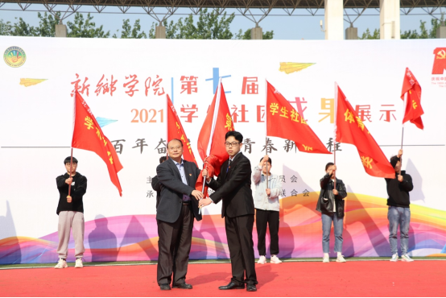
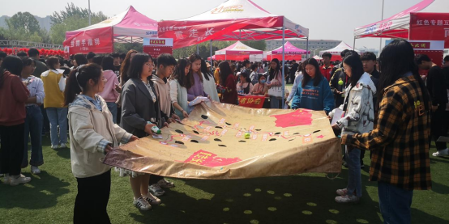
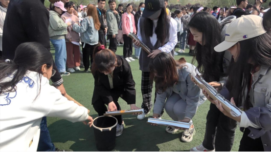
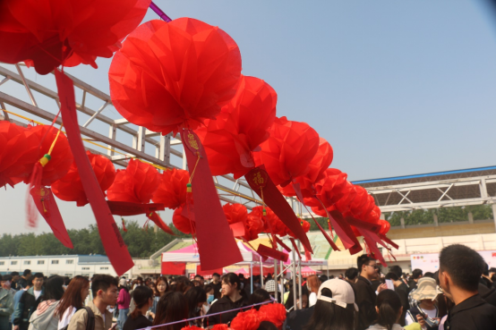
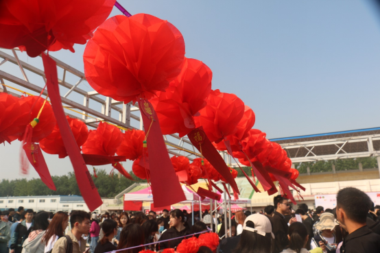

新乡学院“百年奋进路 青春新征程”第七届社团成果展示节开幕
发布时间：2021-04-13 作者：王靓 编辑：高愐洁 浏览次数：648
为庆祝建党100周年，引导全校团员青年学党史、强信念、跟党走，4月10日，由校团委主办、学生社团联合会承办，以“百年奋进路
青春新征程”为主题的新乡学院第七届社团成果展示节，在西运动场正式拉开帷幕。党委副书记杨士斌、校团委老师和各学院团委老师，与2万名青年学生一同参加了本次社团成果展示节开幕式。
本次开幕式包括节目演出、成果展示和游园会。上午9点，杨士斌向学生社团联合会授旗，开幕式演出正式开始。节目内容精彩纷呈，有紧扣建党100周年主题的红色歌曲、
情景朗诵，有传承中华传统文化的茶道、书法、汉服、相声展示，更有尽显青春动律的交谊舞、街舞、曳舞表演，整场演出吸引了千人围观，欢呼声一浪高过一浪。
游园会是本次开幕式的重要环节。在往届承办的基础上，结合“学党史 强信念 跟党走”学习教育，专门设置了红色专题互动类体验区，包括“重走长征路”、“红军挑梁小道”、“猜灯谜学党史”、“投掷手榴弹”、“救助伤员”、“南水北调”等项目，
将党的光辉历程、伟大精神巧妙融入互动项目，让同学们在形式多样的活动中，学习党史知识，体悟革命精神，从而坚定理想信念，厚植家国情怀。除此之外，还有休闲益智体验、传统文化推广、教育公益实践、
活力运动竞技等四类共计30项活动，整个活动设计与时代热点结合、兼顾趣味性和可操作性，共发出游园卡2万张。各活动项目摊位前人声鼎沸，络绎不绝，工作人员有序组织青年学生参与互动。
与此同时，操场外的道路两旁由22个学院、3个行政部门指导的优秀学生社团进行成果展示，囊括了近两年来的优秀作品、精品活动图片、荣誉证书等。
两年一届的社团成果展示节作为我校共青团精品活动项目，是参与人数最多、影响力最大的校园文化活动之一，旨在繁荣校园文化、
促进学生社团健康发展，彰显我校青年学生的青春风采。而本届展示节更是我校共青团庆祝建党100周年“六个一系列”活动的重要组成部分，为期两个月，后续将陆续开展30个精品社团活动，于5月进行总结表彰。



 
